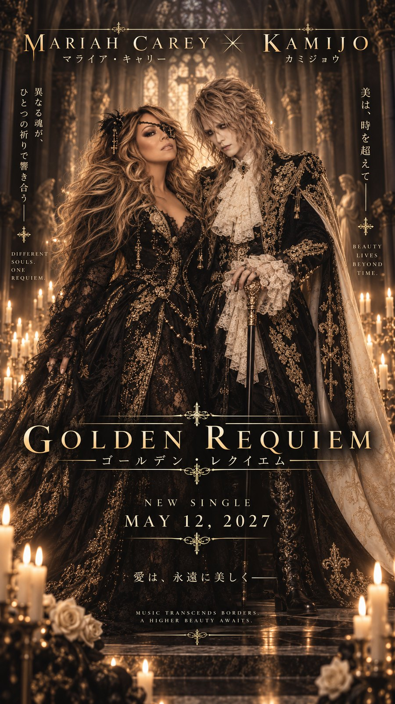

MARIAH CAREY
Vocals, songwriting, co-productionOne of the most widely imitated vocalists in popular music.
Golden Requiem is a six-and-a-half-minute mass for something beautiful that refuses to end.
Mariah Carey sings in English. KAMIJO sings in Japanese.
“Light me once, and let me burn / until the gold runs down the stone.”
Produced by KAMIJO and Mariah Carey.
One of the most widely imitated vocalists in popular music.
A central figure of Japanese visual kei since the 1990s.
Let's start at the beginning.
KAMIJORock in Rio. Rio de Janeiro.
MARIAH CAREYAnd I had no idea any of this was happening.
Was Mariah part of that?
KAMIJOShe was the whole argument.
Had you encountered visual kei before that night?
MARIAH CAREYNot by name, no.
Who spoke first?
MARIAH CAREYI sent someone to find him.
KAMIJOI asked her what key she had modulated into on the last chorus.
MARIAH CAREYHe was right, by the way.
What actually got it moving?
KAMIJONothing, for about eight months.
MARIAH CAREYI sang over it that night.
KAMIJO“Naturally.”
How did you divide the writing?
KAMIJONeither lyric would be a translation.
MARIAH CAREYAnd they only meet at the end.
Why “requiem”?
KAMIJOBecause a requiem is not a song about death.
MARIAH CAREYIt's gold, not black.
Was there anything about the sessions that surprised you?
MARIAH CAREYHow long he takes on one line.
KAMIJOHer second take is usually the one.
What do you want somebody to feel when it ends?
KAMIJOI want them to sit still for a moment.
MARIAH CAREYI want them to play it again immediately.
